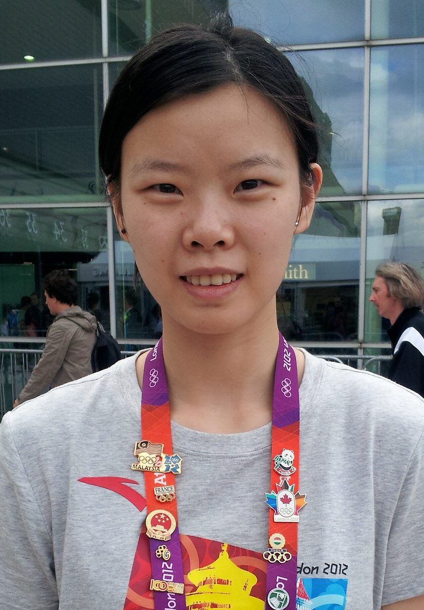
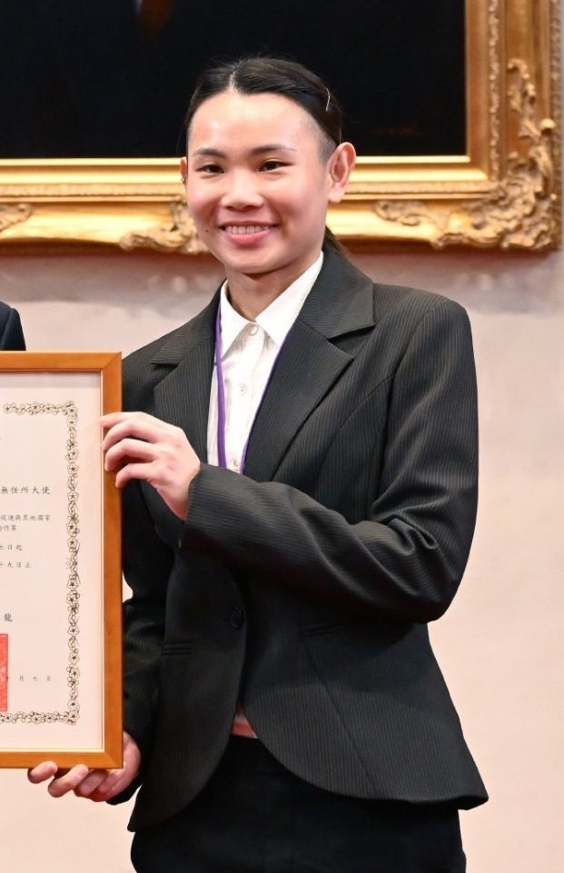

From a Sweet Factory Court to Badminton History: The Life of Ratchanok Intanon
The 2013 world champion overcame poverty, chronic injuries and personal loss to remain Southeast Asia's defining singles shuttler.

Ratchanok Intanon was born on 5 February 1995 in Yasothon province in northeastern Thailand, before moving to Bangkok with her parents, Winatthachai Intanon and Kamphan Suwannasara. Her parents took jobs as laborers at the Banthongyord sweet factory, where large vats of boiling syrup and sugar posed an everyday risk to children roaming the production floor. Factory owner Kamala Thongkorn stepped in to move six-year-old Ratchanok away from the machinery, guiding her onto the factory's private badminton courts so she could play safely while her parents worked. That decision formed the foundation of the Banthongyord Badminton School, where Chinese coach Xie Zhihua took charge of her daily technical education.
Nicknamed "May," Ratchanok won her first national junior tournament at age seven and made her international senior debut at 13 at the 2008 Laos International Series, reaching the women's singles final. In April 2009, at 14, she secured her maiden senior international title at the Vietnam International Challenge. Seven months later in Alor Setar, Malaysia, she defeated compatriot Porntip Buranaprasertsuk 21–15, 21–23, 21–10 to become the youngest-ever BWF World Junior champion. She proved that achievement was no anomaly by defending the world junior crown against Japan's Misaki Matsutomo in Guadalajara in 2010, and against Indonesia's Elyzabeth Purwaningtyas in Taoyuan in 2011, making her the first player to win three consecutive singles titles at the World Junior Championships.
The Breakthrough in Guangzhou and World Number One

Ratchanok stepped onto the senior global stage with a quarter-final run at the London 2012 Olympic Games at age 17, losing in three sets to China's second seed Wang Xin after taking the opening game. In March 2013, she reached the final of the All England Open in Birmingham, falling to Denmark's Tine Baun to become the tournament's youngest singles finalist. A month later, she defeated Germany's Juliane Schenk at the India Open to capture her maiden BWF Superseries title at 18 years, two months and 22 days.
Her defining triumph arrived on 11 August 2013 at the BWF World Championships in Guangzhou, China. Seeded fourth, she eliminated Spain's Carolina Marín in a three-game quarter-final and India's P. V. Sindhu in straight sets in the semi-finals. In the final, Ratchanok faced world number one and reigning Olympic champion Li Xuerui. In a 65-minute contest, Ratchanok recovered from deficits to defeat Li 22–20, 18–21, 21–14. At 18 years, six months and six days, she became the youngest singles world champion in badminton history and the first Thai shuttler to win a world championship title.
In April 2016, Ratchanok achieved an unprecedented physical run on the BWF circuit. Over three consecutive weeks, she won three straight Superseries titles: the India Open in New Delhi, the Malaysia Open in Shah Alam, and the Singapore Open, where she fought back to beat China's Sun Yu 18–21, 21–11, 21–14 in the final. The hat-trick lifted her to the women's singles world number one spot on 21 April 2016, making her the first Thai shuttler to top the BWF world rankings. Four months later, she served as Thailand's flag bearer at the 2016 Rio Olympic Games.
Heartbreak, Loss and the Drive to Keep Playing

Ratchanok's career at the highest level was continually tested by recurring knee, back and shoulder ailments. Yet she repeatedly rallied into form, winning the Asia Championships in Wuhan in 2015 by beating Li Xuerui in the final, and adding the Malaysia Masters titles in 2018 and 2019. At the delayed Tokyo Olympics in July 2021, she reached the quarter-finals before falling 21–14, 18–21, 18–21 to longtime rival Tai Tzu-ying of Chinese Taipei.
Just days after returning to Bangkok from Tokyo, Ratchanok suffered the deepest loss of her life. On 19 August 2021, her mother, Kamphan Suwannasara, suffered sudden respiratory failure. Ratchanok performed CPR at home, but her mother was pronounced dead on the way to the hospital. Devastated, Ratchanok withdrew from the Sudirman Cup and Uber Cup. When she eventually resumed training, she made a public vow to continue competing in memory of her mother.
She carried that motivation back onto the podium. In July 2022, Ratchanok defeated Olympic gold medalist Chen Yufei 21–15, 13–21, 21–16 to claim the Malaysia Open in Kuala Lumpur, dedicating the victory to her late mother. In March 2024, she ended another two-year title drought by winning the Spain Masters in Madrid, wearing a silver necklace containing a stone taken from her mother's home. "I choose one from her life, from her home, to take with me because she also never went overseas so now I take her everywhere," she told Olympics.com.
At the Paris 2024 Olympic Games, her fourth appearance at the Games, Ratchanok faced Tai Tzu-ying in their 36th career encounter during the group stage on 31 July. Ratchanok won 21–19, 21–15, and the two veterans shared a prolonged embrace and tears at the net. Ratchanok reached the quarter-finals at the Porte de la Chapelle Arena before losing to Indonesia's Gregoria Mariska Tunjung. Now in her late twenties, the shuttler who grew up alongside the sweet factory production lines continues to train at Banthongyord, anchoring Thailand's national team and honoring the promises that sustained her rise.